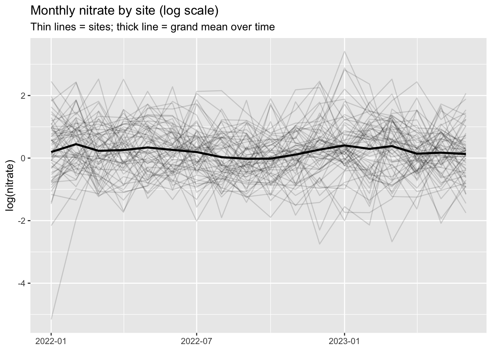
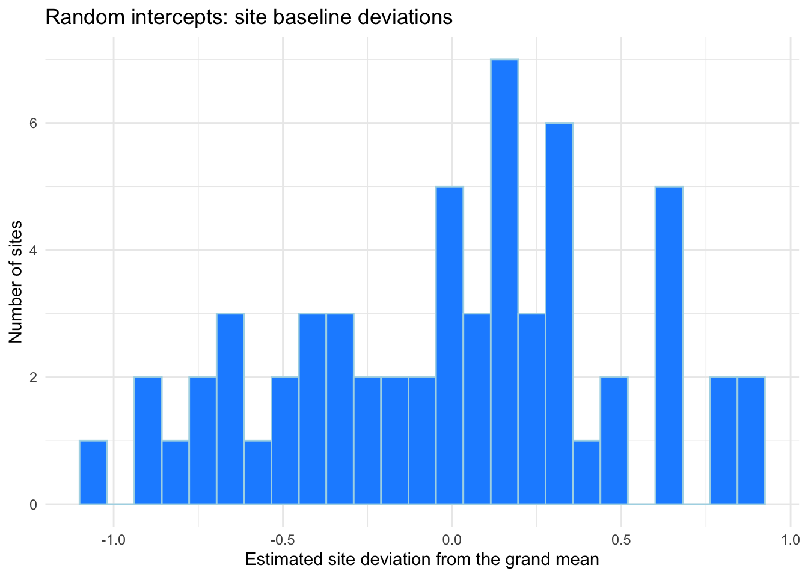
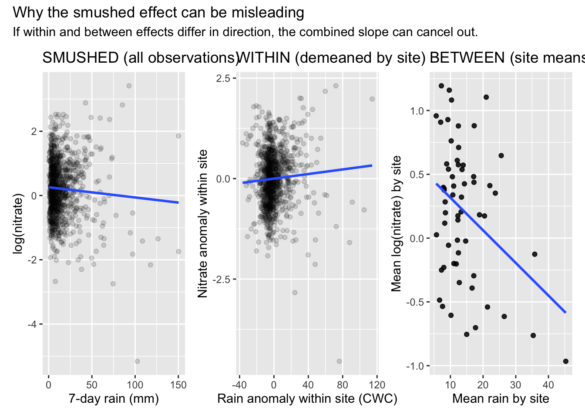
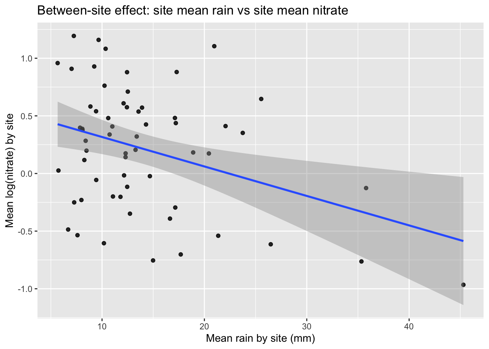

library(tidyverse) # wrangling + plotting
library(lubridate) # dates
library(jtools) # tidy regression output
library(here) # portable file paths (project-root relative)
library(gt) # nice tables
library(lme4) # lmer()
library(lmerTest) # p-values / df for lmer
library(performance) # ICC + diagnostics helpers
library(ggeffects) # model predictions for plots
library(patchwork) # combine plotsLab Week 8: Mixed Effects Models (MLM)
Nitrate in streams case study (simulated): Smushed vs Within vs Between Effects
0.0.1 Lab Outline
- Load packages + data
- Visualize clustering (why MLM?)
- Model 1: Empty random intercept model (ICC)
- Model 2: The smushed effect
- Model 3: The within effect (CWC)
- Model 4: The between effect (site mean)
- Model 5: Within + Between together (clean separation)
- Model 6: Contextual effect (Between − Within)
- Model 7: Random slopes (site-specific within effects)
- Model 8: Cross-level interaction (agriculture moderates within effect)
- Wrap-up: What to look for in papers
0.0.2 Applied motivation (why this lab exists)
In environmental monitoring, we often collect repeated measurements at the same locations:
- Monthly nitrate at each stream site
- Daily PM2.5 at each monitoring station
- Annual vegetation surveys on the same plots
When we have repeated measures or nested sampling, observations within a cluster (site, station, plot) are typically more similar than observations across clusters.
Multilevel models (MLM) also called mixed effects models, hierarchical models, or random effects models explicitly model that clustering.
This lab’s goal is to break down Craig Enders’ “4 effects” concept:
A Level-1 predictor like rainfall can contain two different kinds of information:
- Within-site variation (deviations from a site’s mean)
- Between-site variation (differences in site means)
If you don’t separate them, you get a blended slope coefficient: the smushed effect.
0.0.3 Load packages + data
0.0.4 Read in the simulated nitrate data
nitrate_df <- read_csv(here('week8','data','nitrate_mlm_sim.csv'))0.0.5 Variable descriptions
| Nitrate dataset: Key variables | |
| Label | Description |
|---|---|
| site_id (Level-2) | Stream monitoring site (cluster). |
| date (Level-1) | Monthly measurement date. |
| log_nitrate (Outcome) | log(nitrate mg/L). Using log makes effects interpretable as percent changes. |
| rain_7day_mm | 7-day cumulative rainfall (mm). |
| rain_cgm | Grand-mean centered rainfall (mix of within + between). |
| rain_cwc | Site-mean centered rainfall anomaly (within-site). |
| rain_mean_site_cgm | Site mean rainfall (grand-mean centered). |
| landuse_ag_cgm (Level-2) | Agriculture intensity (grand-mean centered). |
| temp_cwc (Level-1) | Temperature anomaly within site (site-mean centered). |
0.0.6 1. Visualize clustering: nitrate over time by site
ggplot(nitrate_df, aes(date, log_nitrate, group = site_id)) +
geom_line(alpha = 0.15) +
stat_summary(aes(group = 1), fun = mean, geom = "line", linewidth = 1) +
labs(
title = "Monthly nitrate by site (log scale)",
subtitle = "Thin lines = sites; thick line = grand mean over time",
x = NULL, y = "log(nitrate)"
)
Q1. Based on this plot, why is it misleading to treat all rows as independent in a single-level regression?
Response: It will throw off the regression, meaning it will account for all the rows that are above and below the average to not be calculated correctly.
0.0.7 Calculating Intra-Class Correlation (ICC)
What portion of the variation in nitrate levels is between-site vs within-site?

0.0.8 MODEL 0: single-level empty (ignores clustering)
m0_lm <- lm(log_nitrate ~ 1,
data = nitrate_df)
summ(m0_lm, digits = 3, model.fit = FALSE)| Observations | 1080 |
| Dependent variable | log_nitrate |
| Type | OLS linear regression |
| Est. | S.E. | t val. | p | |
|---|---|---|---|---|
| (Intercept) | 0.212 | 0.027 | 7.924 | 0.000 |
| Standard errors: OLS |
# The intercept is the grand mean for the whole nitrate sample0.0.9 Model 1: Empty random intercept model
Goal: Partition variance into:
- between-site variance (sites have different baselines)
- within-site variance (month-to-month fluctuation within a site)
# This model is running the grand mean intercept, with a random intercept by site
m1_empty <- lmer(log_nitrate ~
# Intercept
1 +
# This will capture the variance between the sites, it allows for deviations across each site instead of a whole
(1 | site_id),
data = nitrate_df,
REML = TRUE)
summ(m1_empty, digits = 3, model.fit = FALSE)| Observations | 1080 |
| Dependent variable | log_nitrate |
| Type | Mixed effects linear regression |
| Est. | S.E. | t val. | d.f. | p | |
|---|---|---|---|---|---|
| (Intercept) | 0.212 | 0.069 | 3.057 | 59.000 | 0.003 |
| p values calculated using Satterthwaite d.f. |
| Group | Parameter | Std. Dev. |
|---|---|---|
| site_id | (Intercept) | 0.510 |
| Residual | 0.720 |
| Group | # groups | ICC |
|---|---|---|
| site_id | 60 | 0.334 |
# The ICC: How much of the variance outcome is the within level variance0.0.10 Calculate ICC (portion of between-level variance):
performance::icc(m1_empty)# Intraclass Correlation Coefficient
Adjusted ICC: 0.334
Unadjusted ICC: 0.3340.0.11 How to grand mean center (CGM) and group mean center (CWC) your predictors
Centering helps us isolate within- from between-level variance for predictor fixed effects
Creating variance component predictors:
- Grand mean centered rain (
rain_cgm), - Centered within-site rain anomaly (
rain_cwc) - Between-site difference from grand mean (
rain_mean_site_cgm)
# grand mean of rain across *all* observations
grand_mean_rain <- round(mean(nitrate_df$rain_7day_mm),2)
centered_vars <- nitrate_df %>%
group_by() %>%
mutate(
# site mean rain
rain_mean_site = mean(rain_7day_mm),
# 1) Grand-mean centered rain (CGM): mixes within + between variation
rain_cgm = rain_7day_mm - grand_mean_rain,
# 2) Centered-within-site (CWC): “rain anomaly” vs that site’s typical rain
rain_cwc = rain_7day_mm - rain_mean_site,
# 3) Site mean rain, grand-mean centered: between-site component
rain_mean_site_cgm = rain_mean_site - grand_mean_rain
) %>%
ungroup()0.0.12 Plot: distribution of random intercepts (site baselines)
re_int <- ranef(m1_empty)$site_id |>
as_tibble(rownames = "site_id") |>
rename(u0_hat = `(Intercept)`)
ggplot(re_int, aes(u0_hat)) +
geom_histogram(bins = 25, fill = "dodgerblue", color="lightblue") +
labs(
title = "Random intercepts: site baseline deviations",
x = "Estimated site deviation from the grand mean",
y = "Number of sites") + theme_minimal()
Q2. What does a larger ICC mean here? How does it change (a) effective sample size and (b) how important it is to model site differences?
Response: The ICC affect the sample size by will be overlapped, not providing unique observations, shrinks more between more in variance ICC
0.0.13 Model 2: Smushed effect (grand-mean centered rainfall)
This model uses rain_cgm, which mixes within + between information into one slope.
m2_smushed <- lmer(log_nitrate ~ rain_cgm +
(1| site_id),
data = nitrate_df,
REML = TRUE)
summ(m2_smushed, digits = 3, model.fit = FALSE)| Observations | 1080 |
| Dependent variable | log_nitrate |
| Type | Mixed effects linear regression |
| Est. | S.E. | t val. | d.f. | p | |
|---|---|---|---|---|---|
| (Intercept) | 0.212 | 0.070 | 3.022 | 58.546 | 0.004 |
| rain_cgm | 0.002 | 0.001 | 1.435 | 1060.382 | 0.152 |
| p values calculated using Satterthwaite d.f. |
| Group | Parameter | Std. Dev. |
|---|---|---|
| site_id | (Intercept) | 0.517 |
| Residual | 0.719 |
| Group | # groups | ICC |
|---|---|---|
| site_id | 60 | 0.341 |
0.0.14 Visualize the “Smushed Effect”
# Between-site means
site_means <- nitrate_df |>
group_by(site_id) |>
summarise(
mean_log_nitrate = mean(log_nitrate),
mean_rain = mean(rain_7day_mm),
.groups = "drop"
)
# Within-site demeaned outcome
within_df <- nitrate_df |>
group_by(site_id) |>
mutate(
log_nitrate_cwc = log_nitrate - mean(log_nitrate)
) |>
ungroup()
p_smushed <- ggplot(nitrate_df, aes(rain_7day_mm, log_nitrate)) +
geom_point(alpha = 0.15) +
geom_smooth(method = "lm", se = FALSE) +
labs(title = "SMUSHED (all observations)", x = "7-day rain (mm)", y = "log(nitrate)")
p_within <- ggplot(within_df, aes(rain_cwc, log_nitrate_cwc)) +
geom_point(alpha = 0.15) +
geom_smooth(method = "lm", se = FALSE) +
labs(title = "WITHIN (demeaned by site)", x = "Rain anomaly within site (CWC)", y = "Nitrate anomaly within site")
p_between <- ggplot(site_means, aes(mean_rain, mean_log_nitrate)) +
geom_point(alpha = 0.85) +
geom_smooth(method = "lm", se = FALSE) +
labs(title = "BETWEEN (site means)", x = "Mean rain by site", y = "Mean log(nitrate) by site")
(p_smushed | p_within | p_between) +
plot_annotation(
title = "Why the smushed effect can be misleading",
subtitle = "If within and between effects differ in direction, the combined slope can cancel out.")
Q3. In one or two sentences: what does it mean that the smushed effect is a “blend”? Use the three-panel figure to support your explanation.
Response: The smushed effect is a blend, because it has information from both plots are now together making the information on the plot misleading.
0.1 Model 3: Within-site effect (CWC)
This targets the within-site question:
“When rainfall is higher than usual for the same site, does nitrate change?”
m3_within <- lmer(log_nitrate ~ rain_cwc +
(1| site_id),
data = nitrate_df,
REML = TRUE)
summ(m3_within, digits = 3, model.fit = FALSE)| Observations | 1080 |
| Dependent variable | log_nitrate |
| Type | Mixed effects linear regression |
| Est. | S.E. | t val. | d.f. | p | |
|---|---|---|---|---|---|
| (Intercept) | 0.212 | 0.069 | 3.057 | 59.000 | 0.003 |
| rain_cwc | 0.003 | 0.002 | 1.899 | 1019.000 | 0.058 |
| p values calculated using Satterthwaite d.f. |
| Group | Parameter | Std. Dev. |
|---|---|---|
| site_id | (Intercept) | 0.510 |
| Residual | 0.719 |
| Group | # groups | ICC |
|---|---|---|
| site_id | 60 | 0.335 |
0.1.1 Plot: within-site relationship (anomalies)
ggplot(within_df, aes(rain_cwc, log_nitrate_cwc)) +
geom_point(alpha = 0.15) +
geom_smooth(method = "lm", se = TRUE) +
labs(
title = "Within-site effect: rain anomalies vs nitrate anomalies",
subtitle = "This isolates variation within the same site over time",
x = "Rain anomaly within site (mm)",
y = "Nitrate anomaly within site (demeaned log scale)"
)
Q4. Interpret the within-site coefficient in plain English (direction + unit).
Response: The nitrate anomaly in a log-scale slightly increases as rain anomaly within site (mm), however it is only a slight change
0.1.2 6. Model 4: Between-site effect (site mean rainfall)
This targets the between-site question:
“Do wetter sites (on average) have different average nitrate?”
m4_between <- lmer(log_nitrate ~ rain_mean_site_cgm +
(1| site_id),
data = nitrate_df,
REML = TRUE)
summ(m4_between, digits = 3, model.fit = FALSE)| Observations | 1080 |
| Dependent variable | log_nitrate |
| Type | Mixed effects linear regression |
| Est. | S.E. | t val. | d.f. | p | |
|---|---|---|---|---|---|
| (Intercept) | 0.212 | 0.065 | 3.252 | 58.000 | 0.002 |
| rain_mean_site_cgm | -0.026 | 0.009 | -2.960 | 58.000 | 0.004 |
| p values calculated using Satterthwaite d.f. |
| Group | Parameter | Std. Dev. |
|---|---|---|
| site_id | (Intercept) | 0.476 |
| Residual | 0.720 |
| Group | # groups | ICC |
|---|---|---|
| site_id | 60 | 0.304 |
0.1.3 Plot: between-site means
ggplot(site_means, aes(mean_rain, mean_log_nitrate)) +
geom_point(alpha = 0.85) +
geom_smooth(method = "lm", se = TRUE) +
labs(
title = "Between-site effect: site mean rain vs site mean nitrate",
x = "Mean rain by site (mm)",
y = "Mean log(nitrate) by site"
)
Q5. Why might the between-site relationship differ from the within-site relationship? Give one plausible environmental mechanism or confounder.
Response: Some of the sites may be exposed to more of a runoff from agriculture causing the nitrate levels to spike. More animals may be present causing manuering to take an effect with the soil.
0.1.4 Model 5: Within + Between together (clean separation)
This specification provides separate within- and between-level rain effects.
m5_within_between <- lmer(log_nitrate ~
rain_cwc +
rain_mean_site_cgm+
(1| site_id),
data = nitrate_df,
REML = TRUE)
summ(m5_within_between, digits = 3, model.fit = FALSE)| Observations | 1080 |
| Dependent variable | log_nitrate |
| Type | Mixed effects linear regression |
| Est. | S.E. | t val. | d.f. | p | |
|---|---|---|---|---|---|
| (Intercept) | 0.212 | 0.065 | 3.252 | 58.000 | 0.002 |
| rain_cwc | 0.003 | 0.002 | 1.899 | 1019.000 | 0.058 |
| rain_mean_site_cgm | -0.026 | 0.009 | -2.960 | 58.000 | 0.004 |
| p values calculated using Satterthwaite d.f. |
| Group | Parameter | Std. Dev. |
|---|---|---|
| site_id | (Intercept) | 0.476 |
| Residual | 0.719 |
| Group | # groups | ICC |
|---|---|---|
| site_id | 60 | 0.305 |
0.1.5 Plot: marginal relationships for both effects
p1 <- plot(ggpredict(m5_within_between, terms = "rain_cwc [all]")) +
labs(title = "Within effect (CWC)", x = "Rain anomaly (mm)", y = "Predicted log(nitrate)")
p2 <- plot(ggpredict(m5_within_between, terms = "rain_mean_site_cgm [all]")) +
labs(title = "Between effect (site mean)", x = "Site mean rain (CGM)", y = "Predicted log(nitrate)")
p1 | p2
Q6. Write a sentence that communicates both the within and between findings.
Response: _______________________________
0.1.6 9. Model 7: Random slopes (site-specific within effects)
Now we allow the within-site rain effect to vary by site:
m7_rand_slope <-lmer(log_nitrate ~
rain_cwc +
rain_mean_site_cgm +
temp_cwc +
landuse_ag_cgm +
(1 + rain_cwc | site_id),
data = nitrate_df,
REML = TRUE)
summ(m7_rand_slope , digits = 3, model.fit = FALSE)| Observations | 1080 |
| Dependent variable | log_nitrate |
| Type | Mixed effects linear regression |
| Est. | S.E. | t val. | d.f. | p | |
|---|---|---|---|---|---|
| (Intercept) | 0.212 | 0.057 | 3.691 | 56.683 | 0.001 |
| rain_cwc | 0.010 | 0.003 | 2.920 | 58.941 | 0.005 |
| rain_mean_site_cgm | -0.030 | 0.008 | -3.896 | 56.035 | 0.000 |
| temp_cwc | -0.015 | 0.004 | -3.938 | 982.513 | 0.000 |
| landuse_ag_cgm | 1.317 | 0.304 | 4.340 | 56.707 | 0.000 |
| p values calculated using Satterthwaite d.f. |
| Group | Parameter | Std. Dev. |
|---|---|---|
| site_id | (Intercept) | 0.420 |
| site_id | rain_cwc | 0.022 |
| Residual | 0.627 |
| Group | # groups | ICC |
|---|---|---|
| site_id | 60 | 0.309 |
0.1.7 Plot: Site-specific fitted slopes
1 Error Code Given
# some_sites <- nitrate_df |> distinct(site_id) |> slice_head(n = 12) |> pull(site_id)
#
# grid_df <- nitrate_df |>
# filter(site_id %in% some_sites) |>
# group_by(site_id) |>
# summarise(
# rain_cwc = seq(min(rain_cwc), max(rain_cwc), length.out = 30),
# rain_mean_site_cgm = first(rain_mean_site_cgm),
# temp_cwc = 0,
# landuse_ag_cgm = first(landuse_ag_cgm),
# .groups = "drop"
# )
#
# grid_df$pred <- predict(m7_rand_slope, newdata = grid_df, re.form = NULL)
#
# ggplot(grid_df, aes(rain_cwc, pred, group = site_id)) +
# geom_line(alpha = 0.85) +
# labs(
# title = "Random slopes: rainfall effect varies by site",
# subtitle = "Each line is the predicted within-site relationship for one site (temp_cwc fixed at 0)",
# x = "Rain anomaly within site (mm)",
# y = "Predicted log(nitrate)"
# )Q8. What does it mean if the random slope variance for rain_cwc is near 0? What does it mean if it is clearly > 0?
Response: _______________________________
1.0.1 Model 8: Cross-level interaction (agriculture moderates within effect)
We now test whether slope heterogeneity is systematically related to agriculture:
# m8_cross_level <- lmer(log_nitrate ~
# rain_cwc +
# rain_mean_site_cgm * landuse_ag_cgm +
# temp_cwc +
# (1 + rain_cwc | site_id),
# data = nitrate_df,
# REML = TRUE)
#
# summ(m8_cross_level, digits = 3, model.fit = FALSE)1.0.2 Plot: predicted within-site relationship at low/avg/high agriculture
# plot(ggpredict(
# m8_cross_level,
# terms = c("rain_cwc [all]", "landuse_ag_cgm [-0.25, 0, 0.25]")
# )) +
# labs(
# title = "Cross-level interaction: agriculture moderates rain → nitrate",
# subtitle = "Lines show predicted within-site effect at different agriculture levels",
# x = "Rain anomaly within site (mm)",
# y = "Predicted log(nitrate)"
# )1.0.3 11. Wrap-up: what to look for in environmental science papers
When you read a “mixed effects” Methods section, look for:
- Levels (What is nested in what?)
- Random effects structure (random intercepts only? random slopes?)
- Whether they separated within vs between (or reported a potentially smushed slope)
- Whether fixed effects are interpreted on the correct scale (log vs raw)
Take-home: In clustered data, “the effect of X” is often not one number unless you are explicit about whether you mean within-site variation, between-site differences, or both.